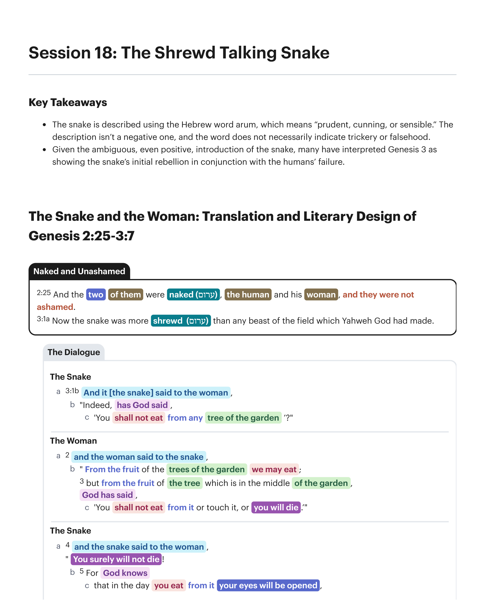
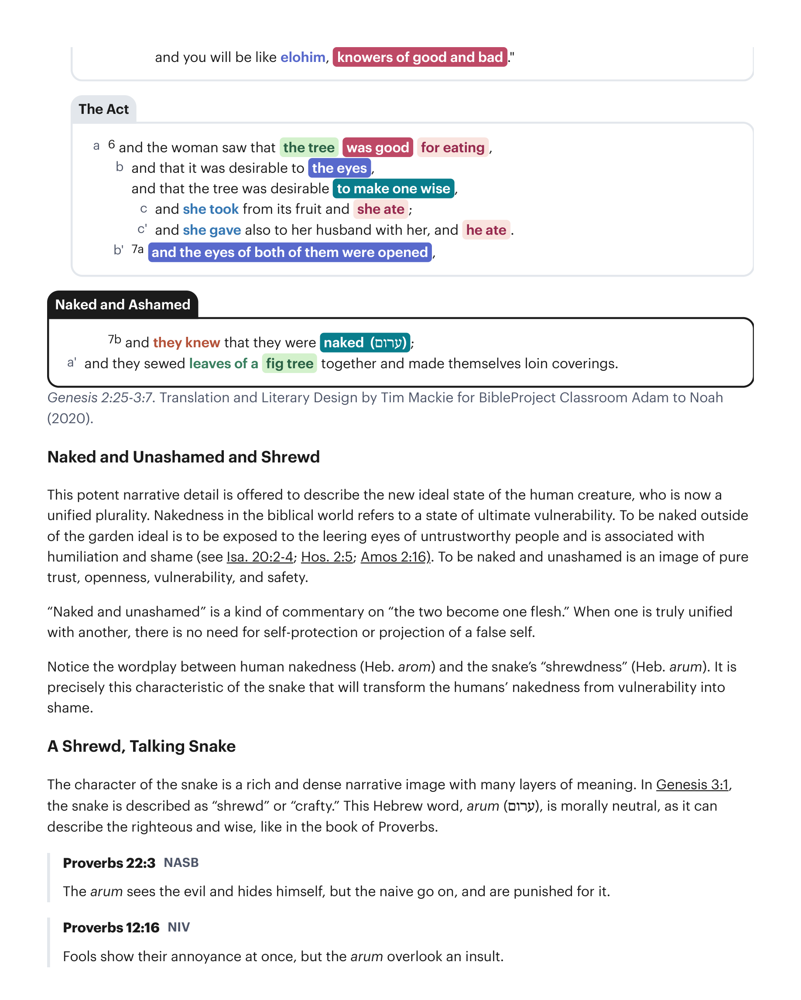

Este potente detalhe narrativo é oferecido para descrever o novo estado ideal da criatura humana, que agora é uma pluralidade unificada. Nudez no mundo bíblico refere-se a um estado de vulnerabilidade última. Estar nu fora do ideal do jardim é estar exposto aos olhares lascivos de pessoas não confiáveis e está associado à humilhação e vergonha (veja Is 20:2-4; Os 2:5; Amós 2:16). Estar nu e sem vergonha é uma imagem de pura confiança, abertura, vulnerabilidade e segurança. "Nus e sem vergonha" é uma espécie de comentário sobre "os dois se tornam uma só carne." Quando se está verdadeiramente unificado com outro, não há necessidade de autoproteção ou projeção de um falso eu. Observe o trocadilho entre a nudez humana (heb. arom) e a "astúcia" da serpente (heb. arum). É precisamente esta característica da serpente que transformará a nudez dos humanos de vulnerabilidade em vergonha.This potent narrative detail is offered to describe the new ideal state of the human creature, who is now a unified plurality. Nakedness in the biblical world refers to a state of ultimate vulnerability. To be naked outside of the garden ideal is to be exposed to the leering eyes of untrustworthy people and is associated with humiliation and shame (see Isa. 20:2-4; Hos. 2:5; Amos 2:16). To be naked and unashamed is an image of pure trust, openness, vulnerability, and safety. "Naked and unashamed" is a kind of commentary on "the two become one flesh." When one is truly unified with another, there is no need for self-protection or projection of a false self. Notice the wordplay between human nakedness (Heb. arom) and the snake's "shrewdness" (Heb. arum). It is precisely this characteristic of the snake that will transform the humans' nakedness from vulnerability into shame.
O caráter da serpente é uma imagem narrativa rica e densa, com muitas camadas de significado. Em Gênesis 3:1, a serpente é descrita como "astuta" ou "habilidosa." Esta palavra hebraica, arum (ערום), é moralmente neutra, pois pode descrever o justo e sábio, como no livro de Provérbios. Provérbios 22:3 (NAA): "O arum vê o mal e se esconde, mas os ingênuos seguem em frente e são castigados por isso." Provérbios 12:16 (NVI): "O tolo mostra sua irritação imediatamente, mas o arum ignora o insulto."The character of the snake is a rich and dense narrative image with many layers of meaning. In Genesis 3:1, the snake is described as "shrewd" or "crafty." This Hebrew word, arum (ערום), is morally neutral, as it can describe the righteous and wise, like in the book of Proverbs. Proverbs 22:3 (NASB): "The arum sees the evil and hides himself, but the naive go on, and are punished for it." Proverbs 12:16 (NIV): "Fools show their annoyance at once, but the arum overlook an insult."
Provérbios 14:15 (NAA): "O ingênuo crê em tudo, mas o arum considera os seus passos." Provérbios 8:5 (NVI): "Vocês que são simples, ganhem ormah; vocês que são tolos, dediquem-se a isso." Quando a palavra é usada de pessoas de caráter questionável, a nuance de "habilidosa" é evidente. Salmo 83:2-3 (NVI): "2 Vê como teus inimigos rosnam, como teus adversários erguem a cabeça. 3 Com ormah eles conspiram contra o teu povo; eles tramam contra aqueles que tu prezas." Jó 5:12-13 (NVI): "12 Ele frustra os planos dos arum, de modo que suas mãos não alcançam sucesso. 13 Ele apanha os sábios em sua ormah, e os esquemas dos astutos são varridos."Proverbs 14:15 (NASB): "The naive believes everything, but the arum considers his steps." Proverbs 8:5 (NIV): "You who are simple, gain ormah; you who are foolish, set your hearts on it." When the word is used of people with questionable character, the nuance of "crafty" is evident. Psalm 83:2-3 (NIV): "2 See how your enemies growl, how your foes rear their heads. 3 With ormah they conspire against your people; they plot against those you cherish." Job 5:12-13 (NIV): "12 He thwarts the plans of the arum, so that their hands achieve no success. 13 He catches the wise in their ormah, and the schemes of the wily are swept away."
"[Os 'arum] ocultam o que sentem e o que sabem (Prov. 12:16, 23). Eles valorizam o conhecimento e planejam como usá-lo para alcançar seus objetivos (Prov. 13:16; 14:8, 18); não creem em tudo o que ouvem (Prov. 14:15); e sabem como evitar problema e punição (Prov. 22:3; 27:12). Em suma, são astutos e calculistas, dispostos a dobrar e torturar os limites do comportamento aceitável mas não a cruzar a linha para a ilegalidade. Podem ser desagradáveis e propositalmente enganosos no falar, mas não são mentirosos declarados (Js 9:4; 1 Sm 23:22). Sabem como ler pessoas e situações e como voltar suas leituras em vantagem. Uma mente aguçada e uma língua afiada são suas ferramentas.""[The 'arum] conceal what they feel and what they know (Prov. 12:16, 23). They esteem knowledge and plan how to use it in achieving their objectives (Prov. 13:16; 14:8, 18); they do not believe everything that they hear (Prov. 14:15); and they know how to avoid trouble and punishment (Prov. 22:3; 27:12). In sum, they are shrewd and calculating, willing to bend and torture the limits of acceptable behavior but not to cross the line into illegalities. They may be unpleasant and purposely misleading in speech but are not out-and-out liars (Josh. 9:4; 1 Sam. 23:22). They know how to read people and situations and how to turn their readings to advantage. A keen wit and a rapier tongue are their tools."
Zevit, Ziony (2013). What Really Happened in the Garden of Eden?. Yale University Press.Zevit, Ziony (2013). What Really Happened in the Garden of Eden?. Yale University Press.
Observe também o trocadilho entre a introdução da serpente e seu destino final em 3:14. Gênesis 3:1 (NVI): "Ora, a serpente era astuta (ערום) mais do que todo animal do campo (מכל חית השדה) ..." Gênesis 3:14 (NVI): "Maldito (ארור) és tu mais do que todo animal e toda besta do campo (מכל חית השדה) ..." A astúcia da serpente é um retrato de uma criatura dotada com a bênção da sabedoria que abusa desse poder para fins egoístas. "Embora todas as traduções em inglês assumam que ערום tem um sentido negativo ('astuta') em Gênesis 3:1, um exame mais atento sugere o contrário. A descrição da serpente começa com seu ser 'mais prudente (arum) do que todas as criaturas do campo' (Gênesis 3:1), e depois de ter tentado Eva, conclui com seu ser 'mais amaldiçoado (arur) do que todas as criaturas do campo' (3:14). As duas linhas são quase idênticas em hebraico, sugerindo um contraste intencional entre elas: a serpente amaldiçoada é um contraste negativo de uma serpente inicialmente positiva e astuta. Não apenas 'prudente' faz mais sentido no fluxo narrativo dos eventos, como também distancia Deus de qualquer responsabilidade quanto à origem do mal. Deus não fez uma criatura 'astuta'; ele fez uma criatura sábia. A 'prudência' da serpente pode até ser um sinal do favor especial de Deus para com a serpente acima dos outros animais. A decisão da serpente de usar sua prudência para intenções malignas, porém, resultou em uma queda do favor divino para a humilhação eterna, e isto oferece uma solução para a antiga questão da queda da serpente (e de Satanás). Quando a serpente rebelou e caiu? Ela 'caiu' em Gênesis 3. Assim, Gênesis 3 retrata a queda de Adão, e Eva, e a serpente."Notice also the wordplay between the snake's introduction and its final destiny in 3:14. Genesis 3:1 (NIV): "And the snake was shrewd (ערום) more than every animal of the field (מכל חית השדה) ..." Genesis 3:14 (NIV): "You are cursed (ארור) more than every beast and every animal of the field (מכל חית השדה) ..." The shrewdness of the snake is a portrait of a creature endowed with the blessing of wisdom who abuses that power for selfish ends. "Although it is assumed by all the English translations that ערום has a negative sense ('crafty') in Genesis 3:1, a closer examination suggests otherwise. The description of the serpent commences with its being 'more prudent (arum) than all the creatures of the field' (Genesis 3:1), and after having tempted Eve, concludes with its bing 'more cursed (arur) than all the creatures of the field (3:14). The two lines are nearly identical in Hebrew, suggesting an intentional contrast between them: the cursed serpent is a negative contrast to an initially positive shrewd serpent. Not only does 'prudent' make more sense of the narrative flow of events, it also distances God from any responsibility with respect to the origin of evil. God did not make a 'crafty' creature; he made a wise creature. The serpent's 'prudence' may even be a sign of God's special favor toward the serpent above the other animals. The serpent's decision to use its prudence for evil intentions, however, resulted in a fall from divine favor to eternal humiliation, and this offers a solution to the age-old question of the serpent's (and Satan's) fall. When did the serpent rebel and fall? It 'fell' in Genesis 3. Thus, Genesis 3 depicts the fall of Adam, and Eve, and the serpent."
Postell, Seth (2011). Adam as Israel: Genesis 1-3 as the Introduction to the Torah and Tanakh. Pickwick Publications.Postell, Seth (2011). Adam as Israel: Genesis 1-3 as the Introduction to the Torah and Tanakh. Pickwick Publications.

Gênesis 3:1 nos diz que "a serpente é mais astuta do que qualquer besta do campo." Esta astúcia implica que a serpente é má?Genesis 3:1 tells us that "the snake is more shrewd than any beast of the field." Does this shrewdness imply that the snake is evil?